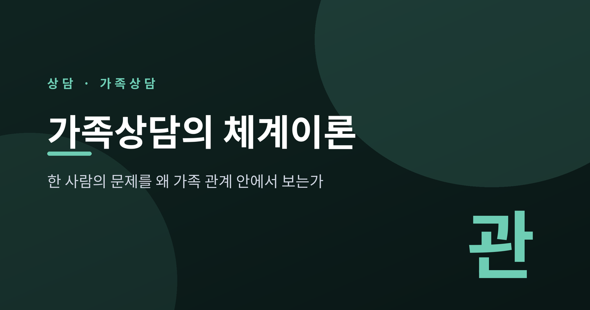
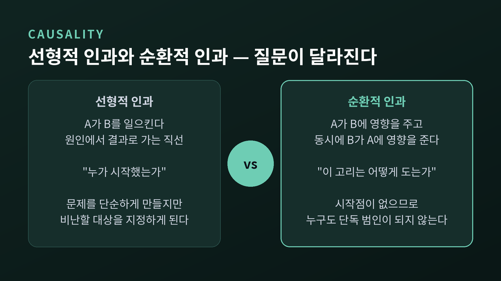
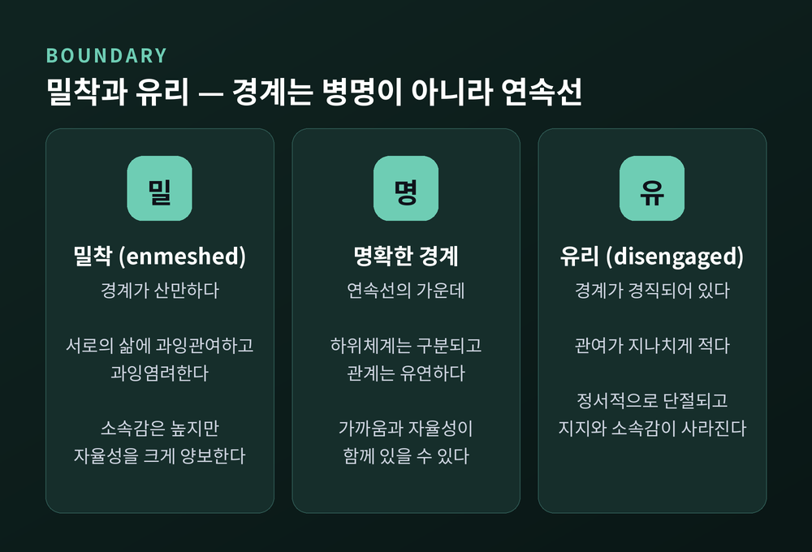
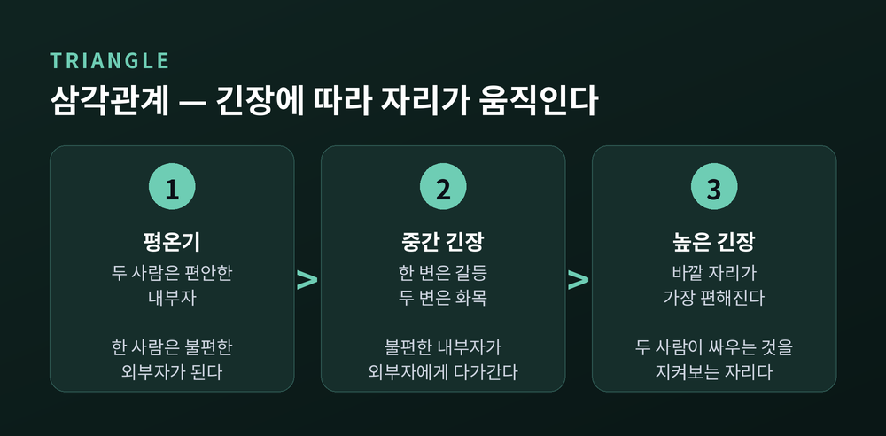
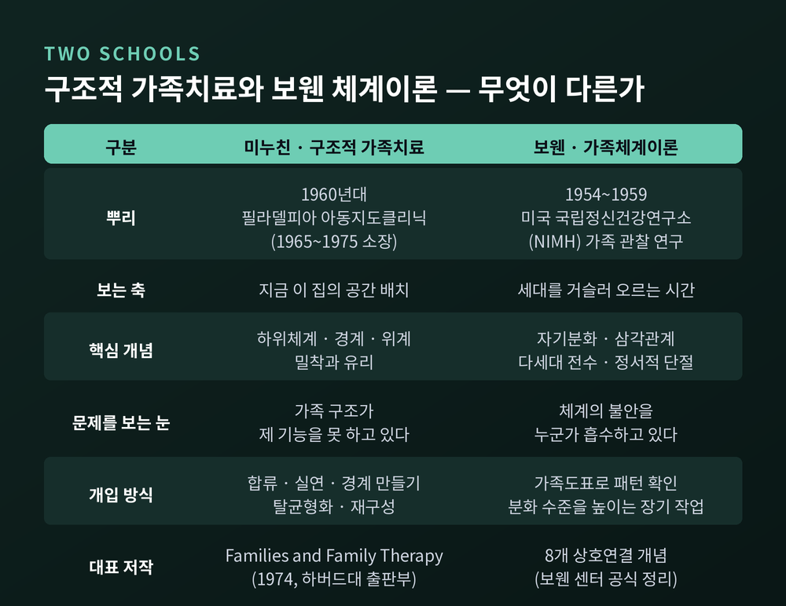
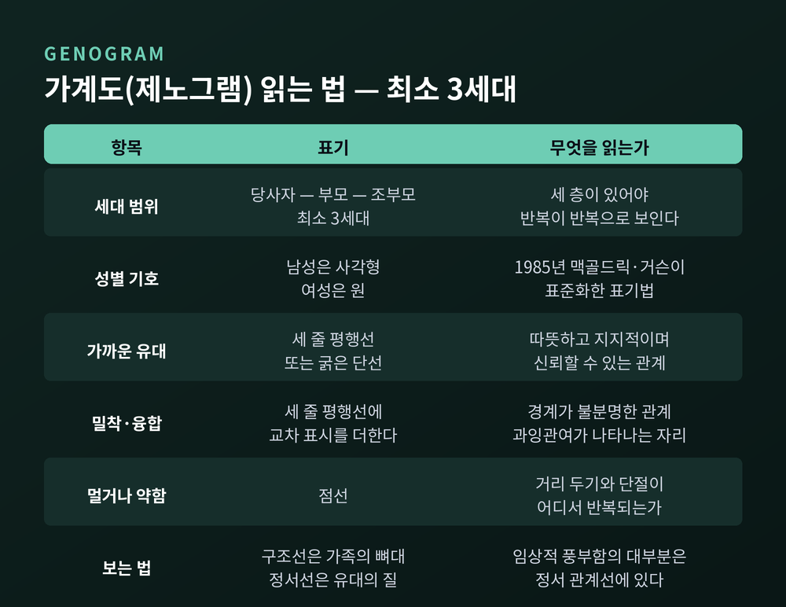
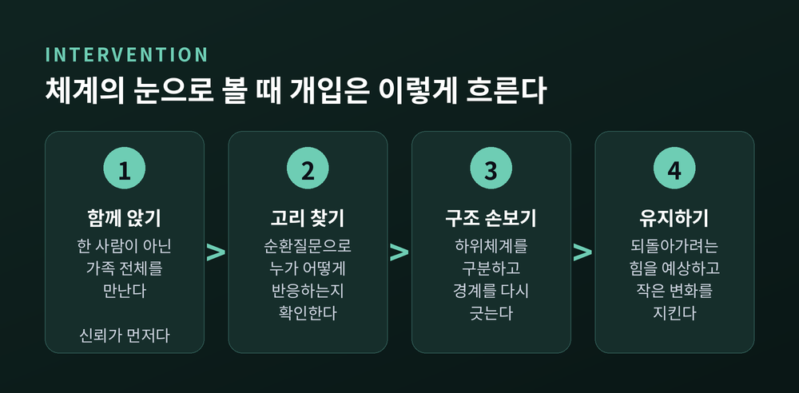

이번 글에서는 가족상담의 체계이론을 정리해 보겠습니다. 한 사람에게 나타난 증상을 왜 가족이라는 관계 체계 안에서 보는지, 그 관점이 상담실에서 어떤 개입으로 이어지는지를 다룹니다.
먼저 결론을 앞에 두겠습니다. 체계이론은 "누가 문제인가"를 묻지 않습니다. "이 문제가 어떤 관계의 흐름 속에 놓여 있는가"를 묻습니다. 질문이 바뀌면, 해볼 수 있는 일도 바뀝니다.
한 가지 미리 말씀드립니다. 이 글은 일반적인 개념 소개이며, 특정 개인이나 가정에 대한 진단이 아닙니다. 등장하는 예시는 모두 문헌에 기술된 전형적 패턴을 바탕으로 합성한 일반화된 상황입니다.
보웬 가족체계이론은 가족을 하나의 '정서적 단위(emotional unit)'로 봅니다.
보웬 센터의 설명은 이렇습니다. 가족 구성원들은 정서적으로 강하게 연결되어 있고, 가족은 구성원의 생각과 감정과 행동에 워낙 깊이 관여해서 마치 사람들이 하나의 '정서적 피부'를 공유하며 사는 것처럼 보인다는 것입니다.
여기서 나오는 핵심 명제가 하나 있습니다. "한 사람의 기능 변화는 예측 가능하게 다른 구성원들의 상호적 변화로 이어진다." 가족마다 상호의존의 정도는 다르지만, 언제나 어느 정도는 존재한다고 봅니다.
이 연결 자체는 문제가 아닙니다. 서로를 보호하고 부양하기 위해 필요한 응집과 협력을 만들어내는 기제입니다.
문제는 긴장이 올라갈 때 생깁니다. 불안은 구성원 사이에 번지고, 그러면 정서적 연결이 위로가 아니라 스트레스가 됩니다. 그리고 이때 가장 많이 맞춰주는 사람이 체계의 불안을 문자 그대로 흡수합니다. 보웬 센터는 그 사람이 우울, 알코올 문제, 신체 질환 같은 어려움에 가장 취약해진다고 설명합니다.
이 대목이 이 글 전체의 출발점입니다. 증상을 보이는 사람이 반드시 가장 약한 사람은 아닙니다. 가장 많이 감당한 사람일 수 있습니다.
체계이론이 기존 관점과 갈라지는 지점은 인과를 보는 방식입니다.
선형적 인과(linear causality)는 A가 B를 일으킨다는 직선적 가정입니다. 문제를 단순하게 만들어 줍니다. 대신 필연적으로 비난할 대상을 지정하게 됩니다.
순환적 인과(circular causality)는 다르게 봅니다. 행동은 재귀적이고 상호영향적입니다. A가 B에 영향을 주고, 동시에 B가 A에 영향을 주어 서로를 강화하는 고리를 만듭니다.

이 차이는 관념적이지 않습니다. 상담실에서 던지는 질문이 실제로 달라집니다.
밀란 학파가 개발한 순환질문(circular questioning)이 그 예입니다. "대화 참여자들이 다루는 주제의 관계적 측면을 고려하도록 초대하는" 질문법입니다.
이런 식입니다. "자녀가 불안해할 때 배우자분은 어떻게 하시나요? 그러면 어머니는 어떻게 반응하시나요?" 혹은 "아이가 화를 낼 때, 어머니의 반응은 아버지의 반응과 어떻게 다릅니까?"
누구도 범인으로 지목하지 않습니다. 그런데도 방 안의 모든 사람이 자기 몫을 보게 됩니다. 이 질문법의 목적은 비난을 이동시키고 암묵적 신념을 드러나게 해서, 가족이 문제를 다시 구성하도록 돕는 데 있습니다.
체계에는 현상을 유지하려는 성질이 있습니다. 항상성(homeostasis)입니다.
체계는 변화를 꺼립니다. 상태를 정적으로 유지하기 위해 할 수 있는 일을 합니다. 그래서 한 사람이 달라지기 시작하면, 가족 안에서 예상하지 못한 저항이 나타나기도 합니다.
여기에 체계이론의 가장 불편한 통찰이 붙습니다. 항상성이 유지된 이유의 일부는 그 체계가 실제로 작동했기 때문이라는 것입니다. 한 사람이 증상을 보인다는 사실이 가족에게 어떤 기능을 수행했을 수 있습니다. 예컨대 가족이 더 위협적으로 느끼는 다른 문제로부터 주의를 돌려주는 기능입니다.
오해하지 않으셔야 할 지점이 여기입니다. 가족이 의도적으로 누군가를 아프게 만든다는 뜻이 아닙니다. 체계가 자동적으로 균형을 되찾으려 한다는 뜻입니다. 누구의 계획도 아닙니다.
가족상담에는 '지목된 환자(identified patient)'라는 개념이 있습니다.
가족이 "이 사람이 문제입니다" 하고 데려오는 사람을 가리킵니다. 체계이론은 그 사람의 증상을 개인 내부의 결함만으로 보지 않습니다. 더 큰 관계 단위 안의 패턴과 해소되지 않은 긴장이 표면으로 올라온 지점으로 봅니다.
그래서 회기의 초점이 옮겨집니다. 지목된 환자 한 사람이 아니라 가족 전체가 대상이 됩니다.
다만 여기서 조심할 것이 있습니다. "그 사람은 체계의 증상일 뿐"이라는 식의 표현은 위험합니다. 개인이 겪는 고통은 실재합니다. 체계의 눈으로 본다는 것은 그 고통을 덜 진지하게 다룬다는 뜻이 아니라, 그 고통이 놓인 자리를 함께 본다는 뜻입니다.
살바도르 미누친은 아르헨티나 태생의 가족치료자입니다. 1921년생이며, 1960년대에 동료들과 함께 구조적 가족치료(Structural Family Therapy)를 발전시켰습니다.
1965년에는 펜실베이니아 대학이 운영하는 필라델피아 아동지도클리닉 소장으로 부임해 1975년까지 일했습니다. 그의 지휘 아래 이 센터는 세계적인 가족치료 훈련 기관으로 성장했습니다. 주저는 1974년 하버드대 출판부에서 낸 『Families and Family Therapy』입니다.
구조적 가족치료는 가족의 구조를 봅니다. 구조는 세 가지로 정의됩니다. 하위체계(subsystem), 경계(boundary), 위계(hierarchy)입니다.
하위체계는 가족 안의 작은 단위들입니다. 부부 하위체계, 부모 하위체계, 형제자매 하위체계가 대표적입니다. 부부로서 나누는 대화와 부모로서 나누는 대화는 성격이 다릅니다. 그 구분이 흐려지면 가족은 힘들어집니다.
경계는 하위체계를 나누는 보이지 않는 선입니다. 미누친은 이 경계가 투과성의 정도에 따라 산만한(diffuse) 쪽과 경직된(rigid) 쪽 사이에 놓인다고 보았습니다.

경계가 지나치게 산만하면 밀착(enmeshed)이 됩니다. 서로의 삶에 과잉관여하고 과잉염려합니다. 소속감은 높아지지만, 그 대가로 자율성을 크게 양보해야 합니다.
경계가 지나치게 경직되면 유리(disengaged)가 됩니다. 관여가 너무 적습니다. 구성원들이 정서적으로 단절되고, 적절한 지지와 연결과 소속감 없이 남겨집니다.
여기서 가장 중요한 대목을 짚겠습니다. 밀착과 유리는 병명이 아니라 하나의 연속선의 양 끝입니다. 양 끝에서 안쪽으로 올수록 경계가 명확해지고 관계가 유연해진다는 것이 원 이론의 설명입니다. 가까운 가족이 곧 문제 있는 가족이라는 뜻이 결코 아닙니다.
구조적 가족치료의 개입은 이 구조를 겨냥합니다. 먼저 합류(joining)로 가족과 신뢰를 쌓습니다. 그다음 실연(enactment)으로 갈등 장면을 회기 안에서 실제로 재연하게 해, 가족이 어떻게 말하고 반응하는지를 봅니다. 필요하면 경계 만들기로 하위체계 사이의 선을 다시 긋고, 탈균형화(unbalancing)로 습관적 상호작용을 잠시 흔듭니다. 그리고 재구성(reframing)으로 같은 행동에 다른 이름을 붙여 봅니다.
미누친은 1978년 동료들과 함께 『Psychosomatic Families』를 내며, 심리신체적 증상이 나타나는 가족에서 관찰되는 네 가지 패턴을 제시했습니다. 밀착, 과보호, 경직성, 갈등 해결의 부재입니다. 다만 이 모델을 실증적으로 검증한 후속 연구들은 부분적 지지에 그쳤다는 점도 함께 기억해 둘 만합니다.
머레이 보웬은 조현병 치료에 관심을 둔 정신과 의사였습니다. 1954년부터 1959년까지 미국 국립정신건강연구소(NIMH)에서 가족을 관찰했습니다.
방식이 독특했습니다. 조현병 진단을 받은 젊은 성인들을 어머니와 함께, 이후에는 다른 가족 구성원들과 함께 입원 병동에서 생활하게 하고, 훈련된 직원이 24시간 관찰했습니다. 여기서 드러난 기능 패턴이 이론의 씨앗이 되었습니다.
보웬 이론은 여덟 개의 상호연결된 개념으로 정리됩니다. 삼각관계, 자기분화, 핵가족 정서과정, 가족투사 과정, 다세대 전수 과정, 정서적 단절, 형제자매 위치, 사회적 정서과정입니다. 이 글에서는 세 가지만 보겠습니다.
첫째, 자기분화(differentiation of self)입니다.
집단은 사람의 생각과 감정에 영향을 줍니다. 그런데 그 영향에 대한 취약성은 사람마다 다릅니다. 이 차이를 보웬은 자기분화 수준이라 불렀습니다.
분화가 낮은 사람은 두 가지 얼굴로 나타납니다. 하나는 남의 인정을 얻으려 자기 생각과 말을 재빨리 바꾸는 쪽입니다. 다른 하나는 남이 어때야 하는지를 단호히 선포하며 동조를 압박하는 쪽입니다. 정반대로 보이지만, 둘 다 타인의 반응에 매여 있다는 점에서 같습니다. 무조건 반대만 하는 사람도 마찬가지입니다.
분화가 잘 된 사람은 타인에 대한 현실적 의존을 인정합니다. 그러면서도 갈등과 비판과 거절 앞에서 침착함을 유지해, 사실을 살핀 사고와 감정에 흐려진 사고를 구별할 수 있습니다. 말과 결정과 행동이 일치합니다. 보웬 센터의 표현을 빌리면 "밀어붙이지 않으면서 자기를 규정하고, 물러터지지 않으면서 압력을 다룹니다."
분화는 성격 등급이 아닙니다. 그리고 한번 자리 잡으면 구조화된 장기적 노력 없이는 잘 바뀌지 않는다고 봅니다.
둘째, 삼각관계(triangle)입니다.
삼각관계는 3인 관계 체계입니다. 보웬은 이것을 가장 작은 안정적 관계 체계이자 정서 체계의 '분자'라고 불렀습니다.
이유는 이렇습니다. 두 사람만의 관계는 긴장을 거의 견디지 못하고 제3자를 끌어들입니다. 삼각관계는 긴장이 세 관계 사이를 옮겨 다닐 수 있어서 훨씬 많은 긴장을 담습니다.

긴장 수준에 따라 자리가 움직입니다. 평온할 때는 두 사람이 편안한 '내부자'가 되고 한 사람이 불편한 '외부자'가 됩니다. 중간 정도의 긴장에서는 대개 한 변은 갈등, 두 변은 화목한 모양이 됩니다. 긴장이 아주 높아지면 오히려 바깥 자리가 가장 편한 자리가 됩니다. 두 사람이 싸우는 것을 지켜보는 자리이기 때문입니다.
여기서 나온 문장이 이 이론의 핵심을 압축합니다. "긴장을 분산시키면 체계는 안정되지만, 해결되는 것은 아무것도 없습니다."
임상적으로도 시사점이 큽니다. 보웬 센터는 안쪽 자리에서 바깥 자리로 밀려나는 일이 우울이나 신체 질환을 촉발할 수 있고, 부모 두 사람이 아이의 문제에 강하게 초점을 맞추면 아이의 심각한 반항을 촉발할 수 있다고 설명합니다.
셋째, 다세대 전수 과정입니다.
행동과 정서 패턴은 세대를 가로질러 전달됩니다. 대처 방식이 대를 이어 전해지면서, 바꾸기 어려운 패턴이 만들어집니다.
메커니즘은 누적입니다. 가족투사 과정이 세대마다 반복되면 자기분화 수준의 작은 감소들이 쌓입니다. 한 세대에서는 눈에 띄지 않지만, 세 세대를 지나면 뚜렷해집니다. 2023년 연구는 이 전수 과정에서 부모의 성별과 자녀의 성별이 모두 중요한 역할을 한다고 보고했습니다.
두 이론은 경쟁 관계가 아닙니다. 미누친이 지금 이 집의 공간 배치를 본다면, 보웬은 시간을 거슬러 올라가 대물림을 봅니다. 보는 축이 다를 뿐입니다.

가계도, 즉 제노그램(genogram)은 가족을 시각적으로 지도화한 임상 도구입니다.
표준 표기법은 모니카 맥골드릭과 랜디 거슨이 1985년 저서 『Genograms in Family Assessment』에서 확립했습니다. 남성은 사각형, 여성은 원, 관계 유형별로 다른 선 패턴을 씁니다.

최소 3세대를 그리는 것이 기준입니다. 당사자, 부모, 조부모입니다. 세 층이 있어야 반복이 반복으로 보이기 때문입니다.
가계도의 임상적 가치 대부분은 정서 관계선에 있습니다. 구조선이 가족의 뼈대를 따라 그어지는 것과 달리, 정서선은 두 사람 사이 유대의 질을 나타내기 위해 누구와 누구 사이에든 그을 수 있습니다.
표기는 이렇습니다. 세 줄 평행선이나 굵은 단선은 가깝고 지지적인 유대를 뜻합니다. 여기에 교차 표시가 더해지면 밀착 또는 융합된 관계를 뜻합니다. 점선은 멀거나 약한 관계입니다.
효과는 의외로 즉각적입니다. 단순한 3세대 도표 하나가, 대화만으로는 몇 주가 걸릴 패턴을 한 장에 드러내 보이기도 합니다.
보웬 자신도 이런 도표를 연구와 임상과 훈련에서 직접 사용했습니다. 그는 이를 '가족도표'라 불렀고, 여러 세대에 걸친 기능의 사실을 그려 넣어 가족을 하나의 정서 체계로 보는 도구로 삼았습니다.
이제 관점이 개입으로 바뀌는 자리를 보겠습니다. 아래는 문헌에 기술된 전형적 패턴을 바탕으로 합성한 일반화된 예시입니다. 특정 가정의 사례가 아닙니다.

유형 1 — '문제 아이'가 사실은 긴장의 통로일 때
부부 사이의 긴장이 직접 다뤄지지 않는 가정을 떠올려 보십시오. 두 사람이 유일하게 힘을 합치는 주제가 자녀 문제입니다. 자녀에게 문제가 있는 동안은 부부가 한 팀이 됩니다.
이때 자녀의 증상이 좋아지면 무슨 일이 생길까요. 부부 긴장이 다시 표면으로 올라옵니다. 그래서 개입은 아이 한 사람을 고치는 데 머물지 않습니다. 부모 하위체계와 부부 하위체계를 구분하고, 부부의 대화를 자녀를 거치지 않고 직접 오가게 만드는 쪽으로 갑니다.
유형 2 — 밀착과 유리가 한집에 공존할 때
한쪽 부모와 자녀 사이의 경계는 흐릿하고, 다른 쪽 부모는 정서적으로 물러나 있는 구조도 흔합니다.
이 둘은 따로 생긴 문제가 아닙니다. 한쪽이 가까이 갈수록 다른 쪽은 멀어지고, 멀어질수록 다시 가까워집니다. 서로를 강화하는 순환 고리입니다. 그래서 개입은 "과잉관여하는 사람을 떼어내는" 방향이 아니라, 고리 전체의 간격을 조정하는 방향으로 갑니다.
유형 3 — 3세대에 걸쳐 반복되는 거리 두기
갈등이 생기면 대화 대신 연락을 끊는 방식이 조부모 세대에서 부모 세대로, 다시 자녀 세대로 이어지는 경우도 있습니다. 가계도를 그려 보면 각 세대의 비슷한 자리에 점선이 반복해서 나타납니다.
이때 개입은 과거를 파헤치는 것이 아닙니다. 지금 세대에서 그 패턴을 한 번 다르게 해보는 것입니다.
예전에는 이런 상황에서 "누가 잘못했는지"를 가려내는 것이 상담의 일이라고 여겨졌습니다. 지금은 "이 흐름의 어느 지점에서 무엇을 다르게 해볼 수 있는가"를 함께 찾는 쪽으로 옮겨 왔습니다.
효과 연구도 이 방향을 뒷받침합니다. 2025년 『Journal of Family Therapy』에 실린 25주년 리뷰는 섭식장애, 불안장애, 기분장애, 정신증을 가진 청소년의 기능이 가족치료에 반응해 개선된다고 정리했습니다. 가족치료 단독으로도, 적절한 약물치료를 포함한 다중양식 프로그램의 일부로도 그렇습니다.
청소년 거식증에서는 수치가 더 구체적입니다. 가족기반치료(FBT)는 이 영역에서 가장 큰 근거 기반을 갖고 있으며, 1년간의 치료 후 완전 관해에 도달한 비율이 50%를 넘었습니다. 같은 연구에서 청소년 개인치료는 23%였습니다. 관해 후 1년 내 재발률도 각각 10%와 40%로 차이가 났습니다.
균형을 위해 비판도 함께 적습니다.
첫째, 맥락이 충분하지 않다는 지적입니다. 체계이론이 맥락을 본다고 하지만, 정작 가족이 놓인 더 넓은 사회 구조와 분리한 채 가족 내부만 들여다본다는 페미니스트 진영의 비판이 오래 이어졌습니다.
둘째, 성별 편향입니다. 밀착이라는 개념 자체가 전형적으로 남성적인 자기와 관계의 기준을 반영하며, 그 결과 여성이 선호하는 상호작용 방식을 병리적이라 이름 붙이는 관행에 기여했다는 지적이 있습니다. 베티 카터는 융합 개념이 '과잉관여하는 여성'은 병리화하면서 '거리 두는 남성'은 간과하는 데 쉽게 오용된다고 보았습니다.
셋째, 문화적 편향입니다. 밀착이 경험되는 방식에는 문화 차이가 큽니다. 한 연구는 영국의 밀착된 성인들이 이탈리아의 밀착된 성인들보다 더 많은 우울을 경험했다고 보고했습니다. 개인주의 문화와 집단주의 문화의 기대가 다르기 때문입니다. 가까운 가족 관계를 곧바로 병리로 읽어서는 안 되는 이유가 여기 있습니다.
넷째, 가장 중요한 한계입니다. 순환적 인과는 학대나 폭력이 있는 상황에 적용해서는 안 됩니다. "서로 영향을 주고받았다"는 설명이 피해자에게 책임을 나눠 지우는 방식으로 오용될 수 있기 때문입니다. 폭력의 책임은 폭력을 행사한 쪽에 있습니다. 이 원칙에는 예외가 없습니다.
체계이론은 만능 열쇠가 아닙니다. 아직 완결된 이론도 아닙니다. 미누친의 심리신체적 가족 모델처럼 영향력이 컸지만 실증 검증이 부분적 지지에 그친 부분도 있습니다.
정리하면 이렇습니다.
체계이론이 바꾼 것은 답이 아니라 질문입니다. "누가 문제인가"에서 "이 문제가 어떤 흐름 안에 있는가"로 옮겨 간 것입니다. 이 전환은 누구도 면책하지 않지만, 누구도 단독 범인으로 만들지 않습니다.
"증상은 한 사람에게 나타나지만, 그것이 서 있는 자리는 관계입니다."
한 가지 당부를 남기고 마치겠습니다. 이 글은 자기 가족을 진단하기 위한 도구가 아닙니다. 밀착이나 삼각관계 같은 말을 가족 누군가에게 이름표처럼 붙이는 순간, 이 이론은 원래 하려던 일과 정반대로 쓰이게 됩니다.
가족 안의 어려움이 오래 이어지거나 일상이 흔들릴 만큼 힘드시다면, 혼자 해석하려 애쓰기보다 가족상담사나 정신건강 전문가와 상의해 보시기를 권합니다. 관계의 패턴은 밖에서 함께 볼 때 훨씬 선명해집니다.
가족을 다시 볼 필요가 있느냐고 물으신다면, 저는 이렇게 답하겠습니다. 다시 보는 것이 아니라, 처음으로 전체를 보는 일이라고요.